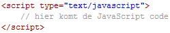
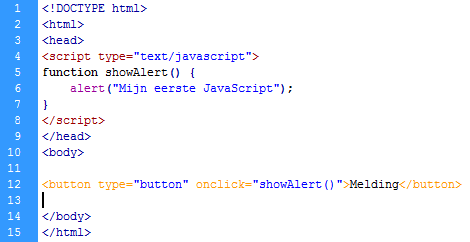
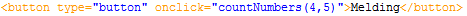
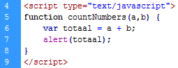
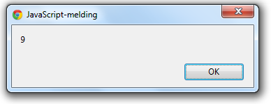
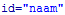
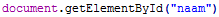
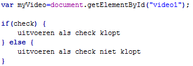
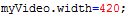

Introductie JavaScript
JavaScript is een scripttaal die veel gebruikt wordt om webpagina's interactief te maken en webapplicaties te ontwikkelen.
De syntaxis van JavaScript vertoont overeenkomsten met de programmeertaal Java. Omdat beide talen het meest zichtbaar zijn op en rond de browser, maar vooral door de naamgeving, worden ze vaak met elkaar verward. De gelijkenis houdt daar echter op, want JavaScript heeft inhoudelijk meer gemeen met functionele programmeertalen, het biedt prototype-gebaseerde overerving en niet, zoals Java en de meeste objectgeoriënteerde talen, klasse-gebaseerde overerving.
JavaScript staat tussen de <head> tags op je HTML pagina. Een voorbeeld daarvan zie je in voorbeeld8-3
| Voorbeeld 9-1 |
|  |
Binnen de code maak je zelf functies aan welke je vervolgens in je HTML code aan roept. Hieronder zie je een voorbeeld van een script. Daarna volgt een regel voor regel uitleg.
| Voorbeeld 9-2 |
|  |
| regelnummer | uitleg |
| 4 | Opening van de <script> tag. Let goed op het type. |
| 5 | Er wordt een function gemaakt genaamd showAlert(). Vergeet niet de { net zoals bij CSS. |
| 6 | Dit is wat de functie uitvoert, in dit geval een alert. Een alert is een soort pop-up met tekst erin. De tekst binnen de dubbele quotes, wordt weergegeven. Vergeet niet de ; aan het einde. |
| 7 | De functie wordt afgesloten met een }. |
| 8 | De </script> tag wordt afgesloten. |
| 12 | In de HTML wordt een button aangemaakt. Zodra op deze button wordt geklikt (onclick) wordt de functie showAlert() uitgevoerd. Het woord Melding staat op de button vermeld. |
| Opdracht 1: Alert box |
Maak een nieuw HTML5 bestand.
|
Je ziet op regel 5 dat de functie showAlert() gemaakt wordt. De twee ronde haken lijken doelloos maar hebben wel degelijk een functie. Binnen deze haken kun je een tekst of waarde meegeven welke binnen de functie gebruikt (moeten) worden. Zo kan JavaScript twee getallen bij elkaar optellen.
Om dit te doen moet je een aantal stappen doorlopen. Als eerste moeten er twee getallen meegegeven worden aan de functie, zodat deze weet welke getallen bij elkaar opgeteld moeten worden. Dit doe je door in de HTML, waar de functie wordt aangeroepen twee getallen tussen de ronde haken te vermelden, gescheiden door een komma. Een voorbeeld daarvan zie je hieronder

Dit is de functie countNumbers(). Binnen deze functie staan de getallen 4 en 5. In de JavaScript moet deze functie dan ook bestaan en moeten de twee getallen in een variabele worden gezet.

Op regel 5 wordt de functie naam genoemd en worden de getallen die mee gestuurd worden in een variabele opgeslagen. In dit geval a en b. Daarna wordt op regel 6 een nieuwe variabele aangemaakt genaamd totaal. Door het woordje var voor totaal, weet JavaScript dat het om een nieuwe variabele gaat. In totaal worden a (getal 4) en b (getal 5) bij elkaar opgeteld. Vervolgens wordt op regel 7 totaal afgedrukt in een messagebox.

| Opdracht 2: Optellen |
Maak een nieuw HTML5 bestand.
|
JavaScript
Hierboven zijn we begonnen met het ontwikkelen van javascript. Weet je het nut er nog van? Waarom was het ook alweer handig? Wat is het verschil met HTML? Javascript wordt door alle webbrowsers ondersteund en is ontwikkeld om de statische HTML pagina’s interactief te maken. Nu is met de komst van HTML5, html al meer interactief geworden maar nog niet voldoende om het te doen vervangen.
Hierboven hebben we een functie gemaakt welke een tekst of opgetelde getallen in een messageBox liet zien. Dit gebeurde steeds op het moment dat erop een knop gedrukt werd. In javascript is het ook mogelijk om tekst op het scherm te laten veranderen.
| Opdracht 3: Namaken |
Maak een nieuwe HTML5 pagina aan.
|
Hier staat nu normale tekst
laat de datum zien
Als je nu op "laat de datum zien" drukt, dan verschijnt daarboven de huidige datum en tijd. Bij jou is dat nog niet. Dat komt omdat we nog geen javascript hebben toegevoegd. Dat gaan we nu doen.
| Opdracht 4: DisplayDate() |
Open het bestand opdracht9-3.html.
|
Je hebt net gezien dat je HTML elementen kunt “identificeren” met . Daardoor worden de elementen met javascript te benaderen. Dit doe je met de javascript functie . Met innerHTML kun je de tekst van het bewuste element aanpassen. In dit geval wordt de functie Date() daar geplaatst. Dat zorgt ervoor dat de datum en tijd wordt geplaatst.
Video
Ook in vorige les behandeld, is de <video> tag. Een video is aan te sturen door middel van play-, pauze- en stopknoppen. Deze knoppen kun je ook zelf maken en de video beheren. De werking daarvan gaat met javascript.
| Opdracht 5: Video aansturen |
Open een nieuw HTML bestand
|
Alleen een play knop is natuurlijk niet voldoende. Eigenlijk is de play knop ook een pauze knop. Het is namelijk of play of pause. We willen deze knop dus uitbreiden. Het video element kent een aantal statussen. Eén daarvan is paused. Het video element weet dus of het filmpje afspeelt of gepauzeerd is. Hier kunnen we handig gebruik van maken. We zullen door middel van een if-statement moeten controleren of het filmpje speelt of gepauzeerd is.
Het if-statement in javascript is hetzelfde als in andere programmeertalen. De syntax zie je in voorbeeld8-2. Omdat we steeds de video moeten aanspreken in de code, is het handig om aan het begin van je javascript code de waarde document.getElementById(“video1”); af te vangen in een variabele. Dit scheelt een hoop typewerk binnen de if en het houdt je code overzichtelijk. Een voorbeeld staat in voorbeeld9-4.
| Voorbeeld 9-4 |
|  |
| Opdracht 6: Pauze knop |
Open het bestand opdracht9-5.html.
|
Een andere eigenschap is volume. Deze kan je ook regelen. Volume ligt tussen de waarde 0 en 1. Waarbij de laagste waarde het zachtst is. Hier moet dus echt een waarde worden toegevoegd.
| Opdracht 7: Volume knop |
Open het bestand opdracht9-6.html.
|
Naast volume kun je ook de afmetingen van je film aanpassen. Dit doe je door de width een andere waarde dan het origineel te geven. Width is de breedte. Omdat het een filmpje is wordt de hoogte automatisch mee veranderd.

| Opdracht 8: Grootte aanpassen |
Open het bestand opdracht9-7.html.
|
Play Volume: Uit size: Klein Normaal Groot
| Opdracht 9: Audio |
Open een nieuw HTML bestand
|